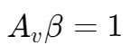
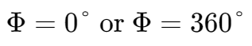
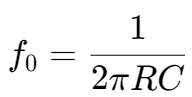
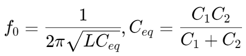
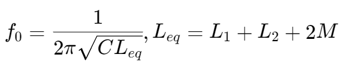

Oscillator
Device producing a continuous alternating waveform without requiring any input.
由一个放大器和一个反馈电路组成。
- The total loop gain must be unity 
- The total phase shift at the oscillation frequency, f0, must be either 
Wien Bridge Oscillator
振荡频率：
Colpitts Oscillator
振荡频率：
Hartley Oscillator
振荡频率：